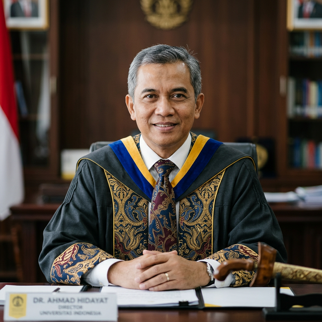

Direktur UT Jakarta
Pimpinan Universitas Terbuka Jakarta

Dr. H. Ahmad Suryadi, M.Pd.
Direktur UT Jakarta bertanggung jawab atas pengelolaan seluruh kegiatan akademik dan administratif di wilayah UPBJJ-UT Jakarta. Beliau memimpin pengembangan program pendidikan jarak jauh yang berkualitas dan menjangkau seluruh lapisan masyarakat di DKI Jakarta dan sekitarnya.
Dengan visi mewujudkan pendidikan tinggi yang terbuka, fleksibel, dan terakreditasi, Direktur terus mendorong inovasi dalam pembelajaran daring dan peningkatan mutu layanan mahasiswa.
Visi & Misi
Fondasi dan arah pengembangan Universitas Terbuka.
🎯 Visi
Menjadi perguruan tinggi terbuka dan jarak jauh berkualitas dunia yang menyediakan akses pendidikan tinggi bagi semua lapisan masyarakat melalui penyelenggaraan berbagai program pendidikan dan penelitian yang relevan dengan kebutuhan pembangunan nasional.
🚀 Misi
- Menyediakan akses pendidikan tinggi yang berkualitas bagi seluruh lapisan masyarakat.
- Mengembangkan program pendidikan jarak jauh yang inovatif dan relevan.
- Melakukan penelitian dan pengabdian masyarakat yang bermanfaat.
- Meningkatkan kualitas layanan akademik dan administratif.
- Mengembangkan kerja sama dengan berbagai lembaga nasional dan internasional.
- Meningkatkan tata kelola universitas yang baik, efektif, dan transparan.
Manajer Tata Usaha
Pengelolaan administrasi dan tata usaha UPBJJ-UT Jakarta.
Dra. Siti Nurhaliza, M.A.
Bertanggung jawab atas pengelolaan administrasi umum, kepegawaian, keuangan, dan sarana prasarana UPBJJ-UT Jakarta. Manajer Tata Usaha memastikan kelancaran operasional dan pelayanan prima bagi seluruh civitas akademika.
Manajer Marketing & Registrasi
Pemasaran dan pendaftaran mahasiswa UT Jakarta.
Dr. Budi Santoso, S.E., M.M.
Mengelola strategi pemasaran, sosialisasi program studi, dan proses registrasi mahasiswa baru dan lama. Tim marketing bekerja untuk menjangkau calon mahasiswa di seluruh wilayah DKI Jakarta melalui berbagai kanal komunikasi.
Manajer Pembelajaran & Ujian
Koordinasi kegiatan belajar mengajar dan penyelenggaraan ujian.
Dr. Ratna Dewi, M.Pd.
Bertugas mengoordinasikan pelaksanaan tutorial online dan tatap muka, pembimbingan akademik, serta penyelenggaraan ujian akhir semester. Memastikan proses pembelajaran berjalan efektif dan sesuai standar mutu universitas.
Struktur Organisasi
Hierarki kepemimpinan UPBJJ-UT Jakarta.
UPBJJ-UT Jakarta
UT Cabang
Universitas Terbuka Cabang – Kantor Cabang di Banjarmasin Utara.
Kantor Cabang
Jl. Sultan Adam No.128, Surgi Mufti, Kec. Banjarmasin Utara, Kota Banjarmasin, Kalimantan Selatan 70122, Indonesia
Website Resmi
info@ut.ac.id
Akreditasi Universitas
Universitas Terbuka terakreditasi oleh BAN-PT dengan peringkat terbaik.
Akreditasi Institusi
Peringkat A (Unggul) dari BAN-PT. Berlaku hingga 2028.
49+ Program Studi
Seluruh program studi UT telah terakreditasi oleh BAN-PT dan LAM terkait.
Pengakuan Internasional
Anggota AAOU, ICDE, dan diakui oleh berbagai lembaga internasional.
Sertifikat ISO
UT memperoleh sertifikat ISO 9001:2015 untuk sistem manajemen mutu.